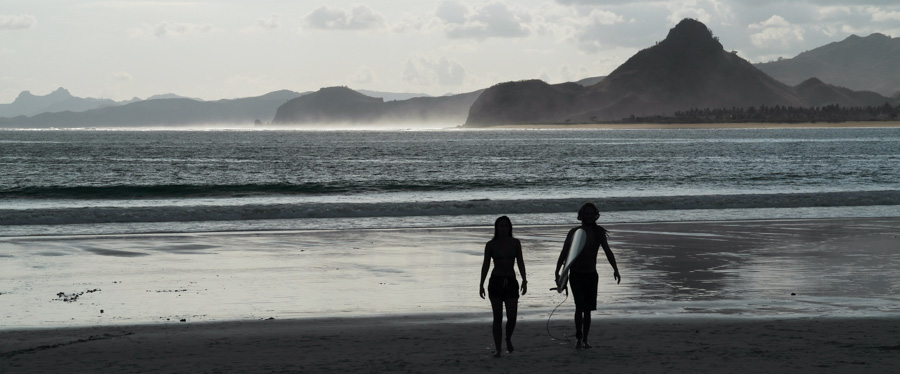
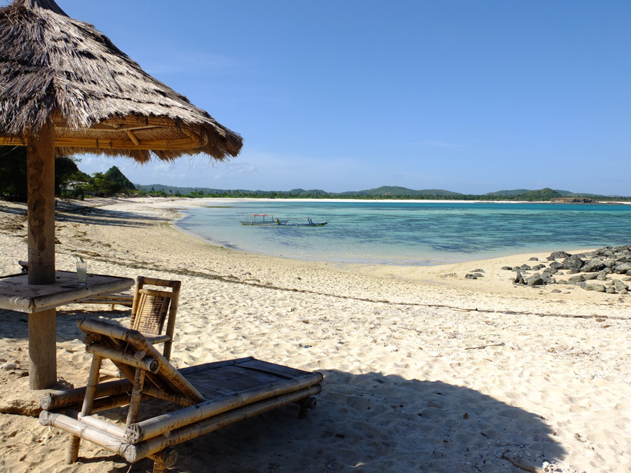
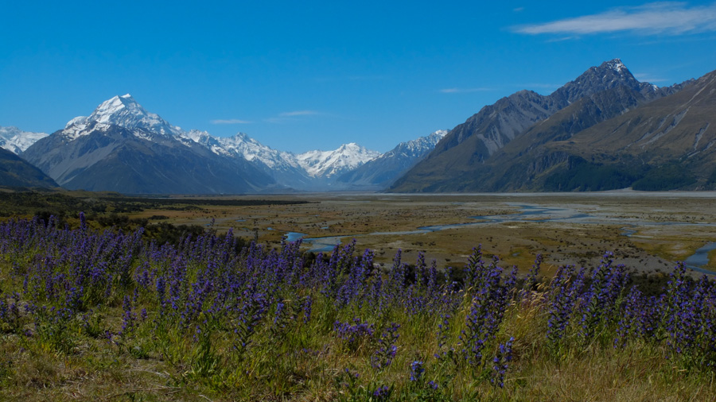
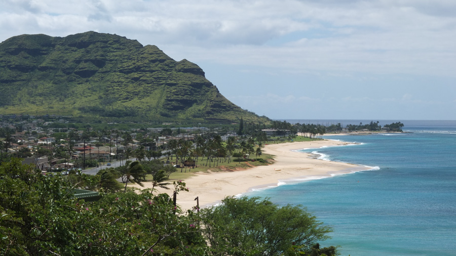
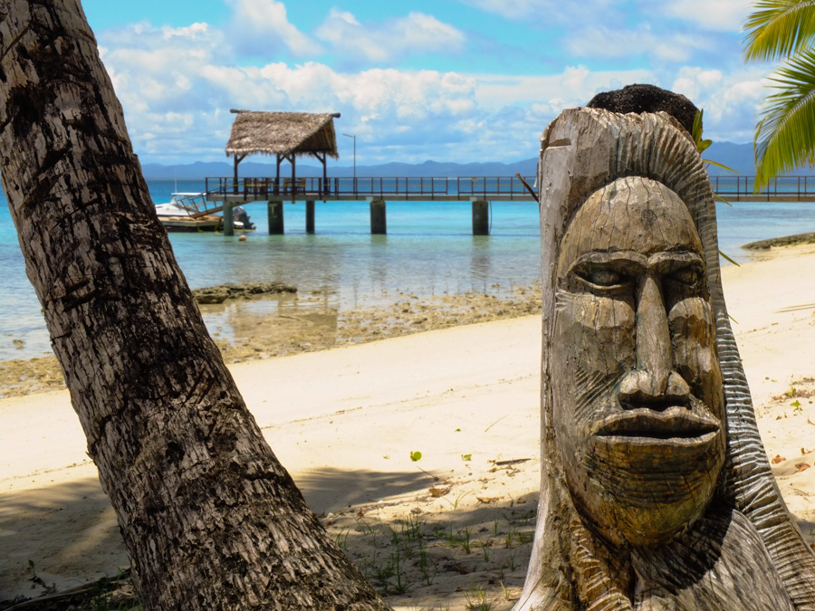

One year on the road

On the 16th April 2013 we set off from Heathrow with a very vague plan and some date-changeable intercontinental flights. Today, one year later*, we are in the Galapagos Islands looking back over a full year.
In some ways it feels like we just left London yesterday and in other ways it feels like a lifetime ago. So much has happened.
So what's come out of so much wandering around? Where have we been? What have we done and not done? Turns out quite a lot.
In the last year we have visited ten different countries: Thailand (three weeks), Myanmar (two weeks), Singapore (one day), Indonesia (three months), Australia (three and a half months), Fiji (one week), New Zealand (three months), the USA (two weeks in Hawaii and Los Angeles), Colombia (nearly three weeks) and Ecuador (nearly two weeks so far).
We booked six flights prior to leaving the UK and changed the dates of every single one of them at least once. In our original plan we would have reached Brazil in time for Carnival (two months ago) but we kept having too much fun wherever we were so instead we decided that the start of the World Cup (in June) would make just as good a target.
We've boarded twenty one flights, uncountable long distance buses, sailed through three overnight boat adventures and have driven more than 25,000km in the two vehicles we bought in Australia and New Zealand (and then managed to sell again!). Timing worked perfectly and we were able to attend three very special wedding celebrations of good friends Down Under and one funeral of a man we had actually never met who had died more than a year earlier.
It has REALLY been amazing, as is to be expected.
It's also been pretty busy - day to day we barely have time to figure out what we are doing tomorrow or next week, decide on routes and research etc, let alone to sit back and reflect on all of the amazing experiences we have had or try to keep this blog up to date. As I sit here on a bouncy bus trying to write this post it seems as hard as ever to justify spending time sat in front of the computer when we could be out exploring or planning our next move.
So after a year of travel what are our highlights? Which places and experiences left a lasting memory?
Its hard to choose the best places overall because nearly everywhere we've been is special for different reasons and depending on the circumstances it was visited in. So we've categorised our low down into the following:
Best place for a three week holiday from Europe - Lombok, Indonesia

This Indonesian island has it all and is only a quick boat trip from touristy Bali (easily reached by cheap flights from Europe). If you are energetic you can climb Gunung Rinjani, a 3742 meter high active volcano. This is a challenging three to four day trek but is one of the highlights of our trip so far.
And to recover afterwards you can look forward to a few days on the Gili Islands, three tiny white sand ringed pieces of heaven, where you can snorkel with turtles and (depending on which of the three little islands you choose to stay on) party the nights away or enjoy some relaxed time on empty beaches.
If you like your surf, then head to Kuta Lombok which has some of the best we've found. Plus dozens of amazing beaches lining the coast, just rent a motorbike and go explore!
Lombok isn't a huge island so it is feasible to have time to enjoy all it has to offer in 3 weeks (although you will wish you could stay longer). It's also cheap, the weather is great and so is the food! The only downside is that the transport network on the island isn't very organised and takes some figuring out - but that is part of the fun!
Best place for wildlife - Galapagos Islands, Ecuador

Now there's a special place. It is by far the largest concentration of wild animals that we've seen and all of them only an arms reach from you. The snorkelling rewards with turtles everywhere you look and there is nowhere else in the world you will swim with penguins this close to you. Seals dance and twirl in the waters oblivious to your presence and baby reef sharks circle your legs in the shallow mangrove waters. On land, strange birds pose for as many photos as you wish, and 100 year old giant tortoises slowly parade their heavy carapaces while your jaw drops.
It is definitely not cheap though! An eight day cruise around the islands will cost something like £2000 (booking last minute can make it cheaper but will reduce your choice in boat), flights from Madrid to Quito with Iberia about £500. After the cruise you should also spend a few days on Santa Cruz and San Cristobal Islands - but even this is more expensive than the rest of Ecuador and South America.
If you have time once you are back in Quito you should also check out the nearby Cotopaxi (the highest active volcano in the world), the Quilotoa loop (beautiful Andean scenery and traditional villages to walk between) and Mindo (cloud forest complete with zip-wires, tubing and tree frogs).
Best place for a 3 month road trip - New Zealand

My favourite country in the world for natural beauty hands down. New Zealand is compact, within a few hours drive you can see a lot. The best way to travel is by car, buses are great but won't wait for you to do sporadic hikes off the side of the road and there are so many of those amazing places in NZ.
If you are there for long enough it's probably worth buying a vehicle and selling it on to another traveller looking to do what you did at the end. It's more of a risk than renting but can end up significantly cheaper. We got a station wagon with space to sleep in the back and a cheap tent. It's not nearly as easy to free camp as it is in Australia but there are lots of cheap DOC campsites in jaw-droppingly beautiful places.
From Cape Reinga at top of the north island to Milford Sound near the bottom of the south island the country is filled with some of the most outstanding scenery in the world. If you have less time then you can concentrate on the more magnificent south island but you will be missing some absolute jewels in the north!
Best Surf (even for beginners) - Hawaii

Mellow waves, warm sea, surf culture everywhere! Hawaii normally gets high marks for big wave and pro surfing but even if you are a white water surfer or still finding your confidence to take it to the green stuff there are incredible spots. Just ensure you take the surf seasons into account as the swell shifts from the north to the south in the spring and summer. Our favourite spot is Hanalei Bay in the Garden Island of Kauai, right next to the pier. Hawaiian locals can be a little (a lot!) territorial when it comes to their waves, but in Hanalei there was none of that as there are plenty of more challenging breaks around for grumpy surfers.
Most surprising culture - Fiji

We imagined Fiji to be very different, and expected a touristy place, with a soul tainted by tourism money and opportunities. Instead, we found a humble people and surprisingly unspoilt country. We chose to visit a couple of small off the beaten track islands which were as picture perfect as any we've seen - with hardly any tourists around.
Only the loveliest locals, who are used to tourism but relaxed and friendly - you never needed to second guess as to their intent or worry whether they were trying to scam or trick you. And they would never give you incorrect information just because that's what they think you want to hear.
It is amazing to look back at these experiences and putting this post together has shone a new light on these places we were so lucky to visit and allowed us to look back on them with a different perspective.
One thing we would do differently is an obvious no brainer and something we need to become better at - travelling slower. We will keep trying....
Comments